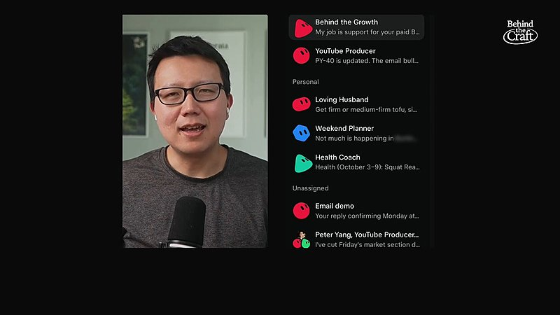
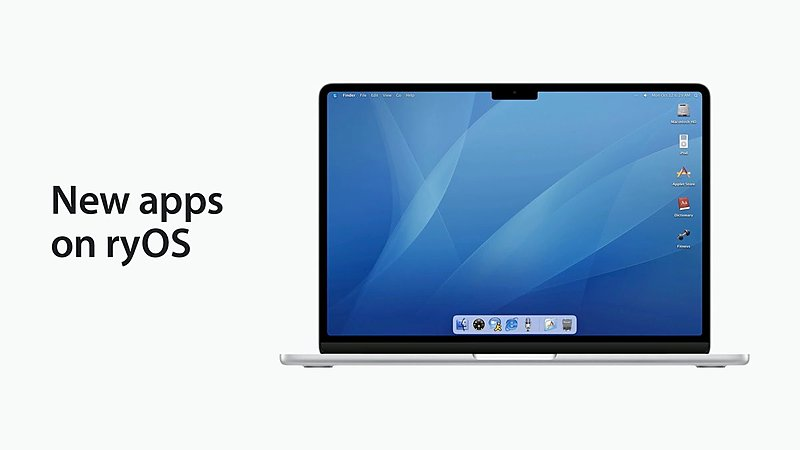

AI 日报 · 10月14日
前沿模型走向可执行的个人 Agent
Google 将 Gemini 4 Argon 开放给 Gemini 应用的 Pro 与 Ultra 订阅用户，Meta 发布面向长期任务的 Muse Wonder 系列。Cheeky Pint 访谈讨论个人 Agent 的记忆、商业模式与基础设施；Builder 动态则提醒我们关注工具摩擦、具体工作流与实际体验。
个人 Agent
Gemini 4 Argon
Muse Wonder
工作流
7
Builder 动态
3
今日上榜项目
3
官方原始来源
1
公开视频
今日要点
Google 10 月 13 日宣布，Google AI Pro 与 Ultra 订阅用户现在可以在 Gemini 应用中使用 Argon。应用同时提供聊天与任务模式切换；macOS 版接入 Antigravity 的代理式编程界面。具体功能和配额仍应以用户所在地区及账户界面为准。
Meta 10 月 12 日发布 Muse Wonder 与 Muse Wonder Full，分别通过 Meta Model API / Muse Code，以及 Muse Code 订阅提供。官方将 Active Memory 和 Active Focus 列为重点能力，并表示进一步的安全评估报告仍待公布；性能领先是厂商的评测结论。
深度对话
扎克伯格与 Alexandr Wang 谈 Muse Wonder
Cheeky Pint 10 月 12 日发布 John Collison 与 Meta CEO Mark Zuckerberg、首席 AI 官 Alexandr Wang 的 134 分钟访谈。以下是原频道节目介绍和章节所讨论的议题；投资规模与产品前景属于受访者的计划和判断。
为什么模型也是产品
节目从 Muse 的使用场景切入，讨论新模型的 Active Memory、跨模态感知、编程能力如何进入个人 Agent。
把长期任务放进真实产品
访谈章节涉及代理式购物、智能眼镜等入口。是否形成可靠的持续服务，还需要观察实际使用和用户控制机制。
规模投入与能力评估要分开看
两位受访者谈到 Meta 的基础设施投入和模型团队建设；这些是公司战略叙述，不能直接当作独立性能证明。
资讯精选
官方原始来源
Google｜Gemini 4 Argon 开放给应用订阅用户
Google 称 Argon 已进入 Gemini 应用，Pro 和 Ultra 订阅用户可用；任务模式支持在用户离开电脑时继续处理任务。公告还称 Gemini 已连接超过 40 个应用。
Google｜Argon 的安全部署说明
Google 解释先让网络防御合作方有限使用 Argon，再逐步扩大访问的做法，并介绍网络安全评估与防护措施。文中具体案例属于 Google 和合作方披露。
Meta｜Muse Wonder 系列发布
Meta 将跨对话提取相关信息称为 Active Memory，将持续尝试、处理阻碍和关键动作前确认称为 Active Focus。Muse Wonder Full 当前面向 Muse Code 订阅用户，完整安全评估报告尚待发布。
Builder 动态
七个围绕 Agent 使用体验的观察
Guillermo Rauch｜编码 CLI 应减少摩擦
Vercel CEO Guillermo Rauch 认为，编码 CLI 不应因为后台进程、多层终端界面和客户端服务器结构而变得难用。他借此介绍自己偏好的轻量工具；启动速度与体积是产品自述。
Aaron Levie｜Agent 应按任务调整自身框架
Box CEO Aaron Levie 转发一项研究，认为 Agent 看到具体任务后，自行选择工作框架的潜力可能高于事先固定所有步骤。这是对研究方向的判断，尚非通用有效性的证明。
Peter Yang｜用角色组织个人 Agent
Peter Yang 展示自己在 Grok Bot 中按职责设置的多个角色，分别处理客户支持、视频准备、家庭事务和锻炼计划。视频画面展示其个人配置，不能代表产品普遍效果。

Ryo Lu｜ryOS 增加词典和健身应用
Ryo Lu 公布 ryOS 的 Dictionary 与 Fitness：前者围绕词汇、发音与汉字学习，后者支持锻炼和饮食记录，并表示开发时使用了 AI 编程工具。配图来自原帖演示视频。

Dan Shipper｜新模型视频生成仍需亲自试
Every 的 Dan Shipper 用 Muse Wonder 制作解释个人基准的视频，认为结果相当粗糙，并观察到语音口音重复。这只是他的单次使用体验，提醒读者区别发布声明与实际作品质量。
Aditya Agarwal｜公开能力也有使用落差
Aditya Agarwal 认为，前沿实验室员工和其他 AI 组织即使用同样公开的能力，实际使用深度仍有明显差距。他将帮助组织缩小落差视作创业机会；这是个人观察而非调查数据。
Zara Zhang｜代码承载人的故事
Zara Zhang 分享朋友用 AI 编程把童年与母亲打蟑螂的经历做成小游戏的故事。她认为作品打动人的关键是具体的个人经验，而非技术复杂度。
GitHub Trending
今日榜单的三个项目


按 10 月 14 日 GitHub Trending 实时榜单筛选；星标、分叉和语言为本次 GitHub API 快照，会继续变化。避开近两日已重点介绍的仓库。
今日思考
模型厂商开始把记忆、持续执行和应用连接打包成可使用的 Agent；Builder 的反馈则指向另一个检验标准：入口是否省事、角色是否清晰、产物是否过关。新模型的官方评测与个人演示都只是证据的一部分，实际采用前仍要验证权限边界、失败恢复和任务结果。今日一问：如果让 Agent 连续处理一周的工作，它的哪一步最需要你主动复核？
参考来源
Google｜Gemini 4 Argon 应用开放
Google｜Argon 安全部署
Meta AI Research｜Muse Wonder
Cheeky Pint｜Muse Wonder 原频道节目
Cheeky Pint｜原频道公开视频
Guillermo Rauch｜CLI 设计
Aaron Levie｜Agent 框架
Peter Yang｜角色式 Agent
Ryo Lu｜ryOS 更新
Dan Shipper｜Muse Wonder 实测
Aditya Agarwal｜AI 使用落差
Zara Zhang｜AI 编程故事
GitHub｜10 月 14 日 Trending
debpalash/VoiceStudio
vercel-labs/skills
xtool-org/xtool